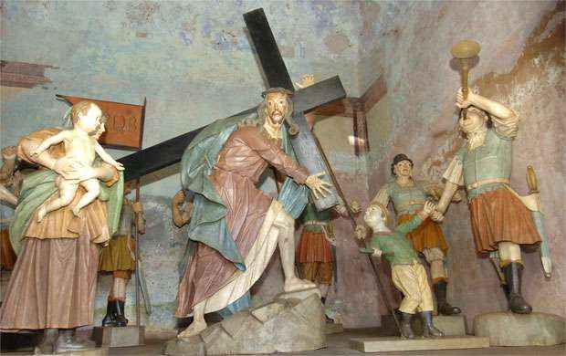
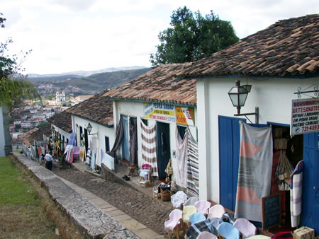

Congonhas (MG) é um lugar turístico marcado pela sua história de ciclo do ouro, arquitetura barroca, e o
Santuário Bom Jesus de Matosinhos, uma obra-prima de Aleijadinho
considerada Patrimônio Cultural da humanidade.
A cidade surgiu no século
XVI, durante o Ciclo de Ouro. O nome "Congonhas" vem de uma planta (o
congonha), utilizado pelos povos indígenas para fazer chá.
Alguns pontos turísticos e arte
barroca mais visitados, são:
- Santuário de Bom Jesus de Matosinhos;
- Os Doze Profetas;
- Via Sacra.
O Patrimônio e a influência para o Brasil
A cidade de Congonhas tem sua origem ligada à mineração do ouro. Ela está localizada em cima de dois
morros opostos, e corre o Rio Maranhão. No século XVIII, o povoado
era considerado um dos maiores centros de mineração de Minas Gerais.
Congonhas é uma cidade
marcada pela fé e pela tradição. Suas festas religiosas, como a Semana Santaa e a
Festa do Senhor Bom Jesus de Matosinhos, atraem fiéis de todo o país e mantêm viva
a devoção que faz parte da história local. A gastronomia mineira também é um grande atrativo: pratos
como o feijão tropeiro, o frango com quiabo, a
pamonha e os famosos doces caseiros encantam moradores e visitantes. Além disso,
Congonhas é reconhecida pelo espírito acolhedor de seu povo.
Pontos Turísticos:
O complexo do Santuário do Bom Jesus de Matosinhos é o principal ponto turístico de Congonhas. É considerado uma das obras-primas do barroco mundial. Também abriga as estátuas dos 12 profetas em pedra-sabão.

Dentro dos Passos, é possível visitar 66 esculturas em madeira policromada, em tamanho natural. Mesmo com o crescimento urbano ao redor, o conjunto ainda preserva sua imponência e valor histórica atraindo visitantes pela riqueza artística e religiosa que representa.

A obra de Aleijadinho em pedra-sabão retrata cada profeta em seus mínimos detalhes, com sua barba; ele veste calçados.

A Romaria é um ponto turístico importante de Congonhas. É um prédio em formato circular que abriga um pátio muito extenso.

A Igreja de São José está localizada na ladeira histórica de Congonhas e é um bom ponto turístico para amantes da história e locais culturais.

O Museu de Congonhas é um local que preserva a história e a cultura da cidade. Localizado no centro histórico, o museu abriga um acervo de objetos e documentos que contão a história de Congonhas desde a sua fundação até os dias atuais.

Santuário do Senhor Bom Jesus de Matosinhos
A iniciativa da construção do templo se deve ao minerador Feliciano Mendes, que acompanhava a bandeira de Bartolomeu Bueno quando caiu em uma grave enfermidade. Em desespero, o minerador fez uma promessa a Bom Jesus de Matosinhos, jurando trabalhar exclusivamente a seu serviço caso melhorasse. Ficando curado, Feliciando Mendes passou a colher esmolas para a construção do templo, mas não chegou a ver completo
Passos da Paixão
Em frente ao Santuário estão os Passos da Paixão de Cristo, distribuídos em seis capelas, que abrigam 66 peças esculpidas em cedro por Aleijadinho e sua equipe e pintadas por Manoel da Costa Ataíde e Francisco Xavier Carneiro. Datam entre 1796 a 1799.
- 1° Passo - Ceia
- 2° Passo - Horto
- 3° Passo - Prisão
- 4° Passo - Flagelação e Coroação de Espinhos
- 5° Passo - Subida ao Calvário ou Cruz-às-Costas
- 6° Passo - Crucificação 
Os Doze Profetas
Depois da conclusão das obras dos Passos da Paixão, Aleijadinho e seus auxiliares começaram a
execução dos 12 profetas para o adro da Igreja do Senhor Bom Jesus de Matosinhos. De 1800 a
1805,
Aleijadinho, mesmo muito doente, deixou aqui, nas imagens esculpidas em pedra-sabão
Os
profetas
são de tamanho normal. Estão vestidos de forma oriental e carregam uma cartela com inscrição
latina,
segundo a profecia de cada um. São eles:
- Jeremias;
- Isaías;
- Baruc;
- Ezequiel;
- Daniel;
- Oséias;
- Joel;
- Amós;
- Abdias;
- Jonas;
- Naum;
- Habacuc.
Salão dos Ex-votos
No Pátio da Basílica está o Salão dos Ex-votos. De várias épocaas, contam através de
pinturas,
retratos, ceras modeladas e cartas, que registram os milagres obtidos por intermédio do Bom
Jesus de
Matosinhos.
O ex-voto é uma forma popular de agradecimento por um milagra ocorrido. É um
testemunho de fé religiosa. A Coleção dos 89 Ex-votos de Congonhas é de grande interesse
artístico e
foi tombada em 29/01/81, pelo IPHAN. Algumas dessas peças
são do
século XVIII.

Igreja de Nossa Senhora do Rosário (século XVII)
A mais antiga de Congonhas. Sua construção foi "realizada" pelos negro, no início da formação do povoado. Acredita que a obra foi realizada em 1697.

Igreja Matriz de Nossa Senhora da Conceição (1734)
Na igreja encontram-se várias fases do Barroco. A construção é da primeira metade do século XVIII. Apresenta o estilo jesuítico na fachada. Vários artistas trabalharam nela, destacando-se Antônio Francisco Lisboa. A portada em pedra-sabão, obra de Aleijadinho, representa a Arca de Noé e a Pombra Imaculada, figuras bíblicas de Maria Imaculada, pairando sobre o dilúvio do pecado. Foi tombada em 21 de julho de 1950 pelo IPHAN.

Igreja de Nossa Senhora da Ajuda (1746)
Localizada no distrito de Alto Maranhão, pouco se conhece a respeito da construção dessa capela. Sua análise construtiva formal permite incluí-la a partir da sehunda metade do século XVIII, conforme informações do IEPHA-MG.

Igreja de Nossa Senhora da Soledade (séc. XVIII)
Essa referência de tempo para a igreja do distrito do Lobo Leite não pode ser considerada
exata, já
que não existem documentos comprovando. A avaliação de sua idade se baseia no aspecto
externo e nos
elementos de seu interior.
Localizada no município de Congonhas, ela tem movimentado a
relação
no campo eclesiástico: depois de ligada em Congonhas (Paróquia de Nossa Senhora da
Conceição),
Miguel Burnier, Conselheiro Lafaiete e Ouro Branco, hoje está sob os cuidados religiosos da
Paróquia
Nossa Senhora Mãe da Igreja, de Congonhas. Ela foi assaltada duas vezes, o que resultou no
desaparecimento de oito imagens, inclusive a da padroeira, e apenas duas foram recuperadas;

Igreja Matriz de São José (finalizada no início do século XX)
Localizada na Ladeira Histórica de Congonhas, a Igreja Matriz de São José Operário foi iniciada em 1817; porém suas obrs foram terminadas somente no início do século XX. Com talha neoclássica, possui três altares primitivos e pinturas simples no teto da nave principal. Suas torres arredondadas (estilo da Igreja São Francisco de Assis, de Ouro Preto) difere das demais igrejas de Congonhas.

Beco dos Canudos
Formada por casas de propriedades da Reitoria da Basílica do Senhor Bom Jesus, conserva a arquitetura característica do período colonial. Estas edificações abrigam lojas de "souvenir". O artesanato comercializado é bastante diverso. São vendidos artigos feitos em gesso, pedra-sabão, madeira, cerâmica, tapeçaria, certos, estanhos, pedras semipreciosas e outros.
Estação Ferroviária
A Estação da antiga Estrada de Ferro Central do Brasil é um edificação representativa da arquitetura eclética do início do século XX.

Venha conhecer Congonhas!
Descubra a cidade onde a fé encontra a arte!
Patrimônio Cultural da Humanidade, Congonhas guarda em cada igreja, escultura e monumento
a história viva de Minas Gerais. Caminhe pelos Passos da Paixão, encante-se com os
Doze Profetas de Aleijadinho e sinta a força do barroco brasileiro.